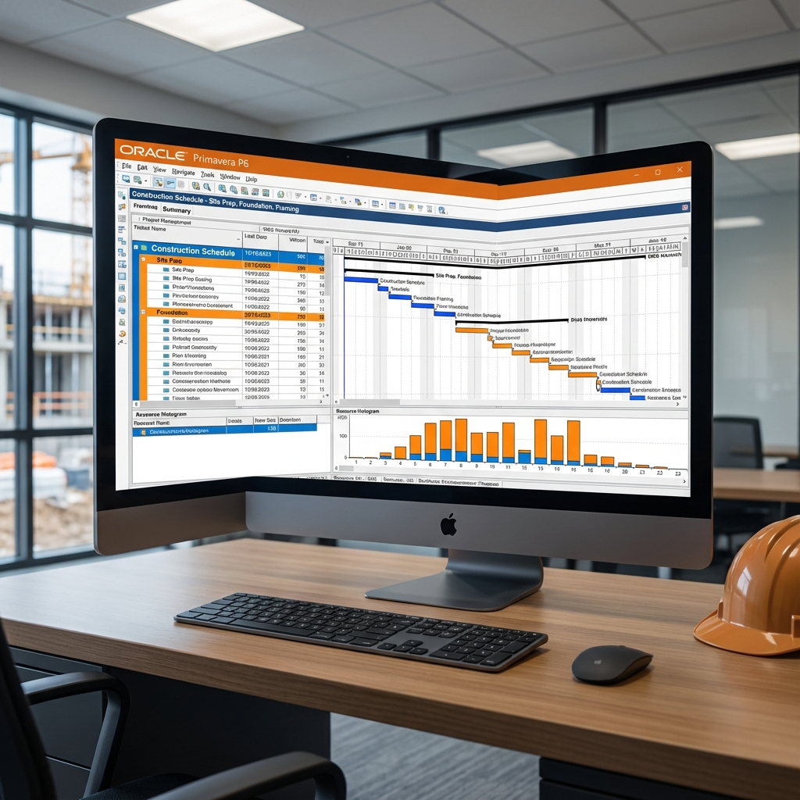

🎯 ما هو Primavera P6؟
Oracle Primavera P6 هو أقوى برنامج لإدارة وجدولة المشاريع الإنشائية الكبرى. يستخدمه مديرو المشاريع ومخططو الجداول الزمنية في جميع أنحاء العالم لإدارة المشاريع المعقدة.
📂 الهيكل التنظيمي (EPS)
يستخدم P6 هيكل Enterprise Project Structure:
- Enterprise: أعلى مستوى (الشركة)
- Portfolio: مجموعة مشاريع مرتبطة
- Program: مشاريع تشترك في هدف
- Project: المشروع الفردي
🚀 خطوات إنشاء مشروع جديد
- File → New → Project
- اختر EPS Node المناسب
- أدخل Project ID و Name
- حدد Start Date و Must Finish By
- اختر Default Calendar
📋 إنشاء الأنشطة
أنواع الأنشطة:
| النوع | الوصف | الاستخدام |
|---|---|---|
| Task Dependent | مدة محسوبة من الموارد | أنشطة تعتمد على عدد العمال |
| Resource Dependent | مدة تعتمد على توفر الموارد | موارد محدودة |
| Level of Effort | مدة تتبع أنشطة أخرى | الإشراف والإدارة |
| Start/Finish Milestone | نقطة بدون مدة | معالم رئيسية |
| WBS Summary | ملخص WBS | تجميع الأنشطة |
🔗 الربط بين الأنشطة (Relationships)
- Predecessor: النشاط السابق
- Successor: النشاط اللاحق
- Lag: تأخير بين الأنشطة
- Lead: تقديم (قيمة سالبة لـ Lag)
📊 WBS (Work Breakdown Structure)
هيكل تقسيم العمل - طريقة لتنظيم الأنشطة:
- Project → WBS → Activities
- يجب إنشاء WBS قبل الأنشطة
- يُستخدم للتقارير والتحليل
📅 التقويمات (Calendars)
- Global Calendar: متاح لجميع المشاريع
- Project Calendar: خاص بمشروع معين
- Resource Calendar: خاص بمورد معين
إعداد التقويم:
- أيام العمل والإجازات
- ساعات العمل اليومية
- العطلات الرسمية
🔄 تحديث الجدول (Updating)
- Data Date: تاريخ التحديث
- Actual Start/Finish: التواريخ الفعلية
- Remaining Duration: المدة المتبقية
- % Complete: نسبة الإنجاز
📈 حفظ Baseline
- Baseline هو نسخة مرجعية من الجدول
- Project → Maintain Baselines → Add
- يُستخدم للمقارنة وتتبع التغييرات
📊 التقارير المهمة
- Activity Report: قائمة الأنشطة
- Schedule Comparison: مقارنة بالـ Baseline
- Resource Usage: استخدام الموارد
- Earned Value: القيمة المكتسبة
المقال التالي: تحميل الموارد وموازنتها في المشاريع